🏛️ 意大利双城漫游攻略
3月13日 - 3月17日 | 罗马 & 佛罗伦萨 · 探索巴洛克浪漫与文艺复兴的完美融合
💡 重要提示
- 防盗核心策略：罗马扒手以特莱维喷泉、Termini车站、40/64路公交车为重灾区。请使用防割斜挎包，护照和大额现金锁在酒店保险箱，随身仅携带当日所需小额现金（€5-10面额）和一张信用卡。
- 奢侈品购买策略：为防止旅途中被盗，建议将奢侈品集中在3月16日下午（归程前一天）于佛罗伦萨Via de' Tornabuoni一条街高效扫货，买完直接回酒店锁好，第二天直奔机场。
- 退税须知：2025年起意大利退税门槛已降至每张发票€70.01。增值税22%，实际退税约12-14%。购物时主动索要 Tax Free Form，检查护照号和国码是否正确。离境时需在机场完成 OTELLO 电子验证或海关盖章。
- 餐厅文化：意大利午餐12:30-14:30、晚餐19:30-22:00。Coperto（座位费）€1-3/人属正常收费，不是宰客。
- 预约提醒：梵蒂冈博物馆、斗兽场、乌菲兹美术馆务必提前2-4周在官网预约！热门餐厅建议提前1周预订。
🗓️ 3月13日：罗马·巴洛克浪漫的开幕
15:00 - 17:30 落地罗马：漫步"三叉戟"区与西班牙阶梯
核心行动：从酒店出发，初识罗马。沿"三叉戟"（Via del Corso、Via di Ripetta、Via del Babuino）三条名街汇聚的人民广场开始漫步，一路南下至西班牙阶梯。
最优项：西班牙大阶梯 (Spanish Steps) & 人民广场 (Piazza del Popolo) ⭐⭐⭐⭐⭐
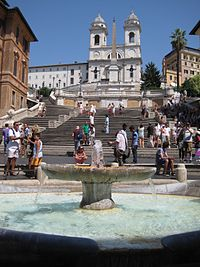
理由：人民广场的双子教堂是对称美学的极致，从这里沿 Via del Babuino 步行15分钟即可抵达西班牙阶梯——罗马最经典的地标。阶梯顶部的圣三一教堂可俯瞰整条奢华的 Via dei Condotti 街。
📸 拍摄点：站在阶梯中段，斜向上仰拍圣三一教堂；或在阶梯顶部俯拍破船喷泉与名店街延伸线，黄金时段光线最佳。
📍 路线：人民广场 → Via del Babuino → 西班牙阶梯
备选行动项（根据体力和兴趣选择）：
- 破船喷泉 (Barcaccia) ⭐⭐⭐⭐：📍 阶梯脚下。贝尼尼父子名作，水流从"沉船"中涌出的设计极具巧思，是阶梯前最佳前景拍摄道具。
- Via Margutta ⭐⭐⭐⭐：📍 Via del Babuino 旁的小巷。《罗马假日》取景地，布满藤蔓和画廊，非常安静，适合文艺青年驻足。
- Caffè Greco ⭐⭐⭐⭐：📍 Via dei Condotti 86。意大利最古老的咖啡馆（1760年），歌德、狄更斯、拜伦曾是座上客，站着喝一杯 Espresso 仅€1.5。
- Babington's Tea Room ⭐⭐⭐：📍 西班牙阶梯脚下。1893年至今的英式茶室，提供全套英式下午茶，适合坐下来歇脚（人均€25-35）。
17:30 - 18:00 下午茶/甜品：第一口 Gelato
核心行动：在前往许愿池的路上，犒劳自己一份地道罗马 Gelato。
最优项：Ciampini (1943) ⭐⭐⭐⭐⭐

理由：📍 Piazza San Lorenzo in Lucina。创立于1943年的老字号，就在西班牙阶梯和许愿池之间的路上，开心果和榛子口味浓郁正宗。判断好 Gelato 的标准：颜色自然不鲜艳、盛放在金属盖盒中而非堆成小山。
📍 位置：从西班牙阶梯步行约8分钟
备选行动项：
- Venchi Cioccolato ⭐⭐⭐⭐：📍 Via della Croce 25。拥有一整面巧克力瀑布墙，适合打卡拍照，黑巧克力 Gelato 浓郁丝滑。
- Gelateria Valentino ⭐⭐⭐⭐⭐：📍 Via del Moro。TripAdvisor罗马排名第一的冰淇淋店（4.7分/6260条评价），若时间允许值得绕路。
- Giolitti (1900) ⭐⭐⭐⭐：📍 Via degli Uffici del Vicario 40（万神殿旁）。百年老店，40多种口味，1940年代原始装潢，奥黛丽·赫本同款。
18:00 - 19:30 许愿池与罗马之夜
核心行动：投币许愿并捕捉华灯初上的城市感。传说背对喷泉用右手从左肩投一枚硬币，就能重返罗马。
最优项：特莱维喷泉 (Trevi Fountain) ⭐⭐⭐⭐⭐

理由：全球最美的巴洛克喷泉，黄昏时分的灯光让白色大理石极具质感。黄昏18:00后人群开始减少，灯光亮起时是最佳拍摄时机。
📸 拍摄点：右侧石阶上方平台，利用人群做虚化前景，对焦在海神尼普顿主体雕像上。
⚠️ 防盗警告：许愿池是罗马扒手第一重灾区！拍照时务必将包挎在身前，手机拍完立即收好，不要在人群中停留过久。
备选行动项（许愿池周边步行可达）：
- Galleria Sciarra ⭐⭐⭐⭐：📍 Via Marco Minghetti 10。隐藏在巷子里的新艺术风格中庭，天花板壁画描绘了各种女性美德，游客极少，免费进入。
- 圣依纳爵堂 (Chiesa di Sant'Ignazio) ⭐⭐⭐⭐：📍 步行5分钟。拥有令人叹为观止的"假穹顶"透视壁画——站在教堂中央铜钉标记处仰望，平面天花板呈现完美的3D穹顶效果。
- Galleria Alberto Sordi ⭐⭐⭐：📍 Piazza Colonna。复古玻璃顶购物廊，适合街拍，内有快闪书店和设计品牌。
20:00 - 22:00 欢迎晚餐：罗马经典四大面
核心行动：用一顿正宗罗马晚餐开启旅程。罗马四大经典意面必须认识：Carbonara（培根蛋酱面）、Cacio e Pepe（胡椒乳酪面）、Amatriciana（培根番茄面）、Gricia（白酱培根面）。
最优项：Hostaria Romana ⭐⭐⭐⭐⭐
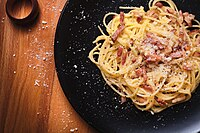
理由：📍 Via del Boccaccio 1（西班牙阶梯附近步行5分钟）。1961年开业的老店，同时精通罗马四大面，其 Saltimbocca（嫩小牛肉配帕尔马火腿和鼠尾草）是传统罗马二道菜的天花板。离第一天的活动区域最近，省去长途跋涉。
🍝 必点：Cacio e Pepe + Saltimbocca + 一杯 Frascati 白葡萄酒
备选行动项（不同风格选）：
- Piccolo Buco ⭐⭐⭐⭐：📍 许愿池旁 Via del Lavatore 91。许愿池周边唯一不踩雷的清流，厚边拿坡里披萨在当地极受追捧，适合想吃轻松一点的第一晚。
- Colline Emiliane ⭐⭐⭐⭐⭐：📍 Via degli Avignonesi 22。专注北意手工意面，蛋黄酱宽面 (Fettuccine al Ragù) 是一绝，1931年至今的家族老店。
- Baccano ⭐⭐⭐⭐：📍 Via delle Muratte 23。工业复古风格的全日餐厅，生蚝拼盘和牛排非常优秀，适合想吃西式的晚上。
- Il Chianti Vineria ⭐⭐⭐：📍 Via del Lavatore 81。意式庭院风，酒单极丰富，托斯卡纳风味菜品不错，但更偏旅游区风格。
🗓️ 3月14日：罗马·千年遗迹与艺术洗礼
07:30 - 08:30 早餐：罗马式的清晨仪式
核心行动：像罗马人一样，站在吧台前花€2吃一个 Cornetto（意式牛角包）+ 一杯 Cappuccino，迅速充能后出发。注意：意大利人只在上午11点前喝 Cappuccino！
最优项：Pasticceria Regoli ⭐⭐⭐⭐⭐
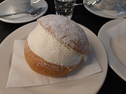
理由：📍 Via dello Statuto 60（Esquilino区）。1916年至今的老字号，其 Maritozzo（奶油大面包）是罗马早餐的灵魂甜品——松软面包中间塞满山丘般的鲜奶油，入口即化。在前往斗兽场的路上顺道打卡。
🥐 必点：Maritozzo con la Panna + Cappuccino（总计约€5）
备选行动项：
- Sant' Eustachio Il Caffè ⭐⭐⭐⭐⭐：📍 Piazza di Sant'Eustachio 82（万神殿旁）。以秘密烘焙技术著称，其 Gran Caffè 咖啡泡沫口感绵密，是罗马最传奇的咖啡。但离斗兽场较远，适合住在中心区的旅客。
- Antico Forno Roscioli ⭐⭐⭐⭐：📍 Via dei Chiavari 34。刚出炉的罗马方块披萨 (Pizza al Taglio)，外酥内软，配一杯咖啡就是完美的罗马站立式早餐。
- La Casa del Caffè Tazza d'Oro ⭐⭐⭐⭐：📍 Via degli Orfani 84（万神殿旁）。咖啡冰沙 (Granita di Caffè) 罗马第一，3月虽然偏凉但依然值得一试。
- Casa Manfredi ⭐⭐⭐⭐：📍 Viale Aventino 91。品质极高的意法混合糕点，有露天座位，吧台€3-5即可吃好。
09:00 - 13:00 千年遗迹：斗兽场·古罗马广场·帕拉蒂尼山
核心行动：这是本次旅程的重头戏。一张联票包含斗兽场 + 古罗马广场 + 帕拉蒂尼山，有效期24小时。务必提前在官网预约指定时段（建议选9:00最早档）。3月非旺季，但早到仍可避开旅行团。
最优项：斗兽场 (Colosseum) → 古罗马广场 (Roman Forum) → 帕拉蒂尼山 (Palatine Hill) ⭐⭐⭐⭐⭐
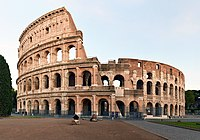
理由：两千年前可容纳5万人的巨型竞技场，走进其中会被那种沧桑的规模感震撼到说不出话。古罗马广场是罗马帝国的政治心脏，残留的元老院、凯旋门、神庙遗址让人穿越两千年。帕拉蒂尼山是皇帝寝宫所在，可俯瞰广场全景。
📸 拍摄点：斗兽场二层看台用广角拍内部全景；古罗马广场 Via Sacra 上以提图斯凯旋门为前景拍斗兽场；帕拉蒂尼山顶俯拍广场遗址全景。
⏱️ 时间分配：斗兽场 2小时 → 古罗马广场 1.5小时 → 帕拉蒂尼山 0.5小时
⚠️ 实用提示：穿舒适运动鞋（古罗马广场地面全是碎石），带水和防晒。安检排队约15-30分钟，建议比预约时间提前20分钟到。
备选行动项（若斗兽场票已售罄或想调换）：
- 帕拉蒂尼山优先 ⭐⭐⭐⭐：若预约到下午的斗兽场场次，可上午先走帕拉蒂尼山+广场，下午再进斗兽场，光线更好且游客更少。
- 斗兽场地下层+竞技场层 (Underground Tour) ⭐⭐⭐⭐⭐：额外€16，可进入角斗士候场的地下通道和中央竞技场木地板，极具震撼力（需单独预约，建议提前1个月）。
- 君士坦丁凯旋门 ⭐⭐⭐⭐：📍 斗兽场旁。315年建造的三拱凯旋门，浮雕精美，与斗兽场同框是经典构图。
13:00 - 14:30 午餐：古罗马风味
核心行动：从斗兽场区域步行10分钟至 Monti（蒙蒂区），这是罗马最有烟火气的街区，藏着大量本地人才知道的小馆子。
最优项：La Nuova Piazzetta ⭐⭐⭐⭐⭐
理由：📍 Via del Boschetto 22（蒙蒂区）。2025年入选携程全球100当地风味餐厅，人均仅€25。老板会热情推荐当日特色菜，Carbonara 是用鲜蛋黄现拌的传统做法，没有一滴奶油。
🍝 必点：Carbonara（正宗罗马做法）+ Supplì（油炸饭团，内馅拉丝马苏里拉）
备选行动项：
- Osteria da Fortunata ⭐⭐⭐⭐：📍 Via del Pellegrino 11。橱窗里有老奶奶现场手搓 Fettuccine 意面，视觉和味觉双重享受。
- Ai Tre Scalini ⭐⭐⭐⭐：📍 Via Panisperna 251（蒙蒂区）。当地人下班后最爱的小酒馆，Polpette（肉丸）配上一杯红酒是经典组合。
- Pizzeria da Baffetto ⭐⭐⭐⭐：📍 Via del Governo Vecchio 114。罗马最传奇的披萨店之一，薄脆到极致的罗马式披萨，人均仅€10-15，但要做好排队准备。
- Bonci Pizzarium ⭐⭐⭐⭐⭐：📍 Via della Meloria 43。罗马"披萨之神" Gabriele Bonci 的方块披萨店，季节性食材搭配惊艳，被认为是全罗马最好的 Pizza al Taglio。
15:00 - 17:30 贵族私藏美术馆 & 万神殿
核心行动：午后避开烈日，转入室内艺术殿堂。先看一座小众美术馆，再顺路打卡万神殿。
最优项：多利亚·潘菲利美术馆 (Doria Pamphilj Gallery) + 万神殿 (Pantheon) ⭐⭐⭐⭐⭐
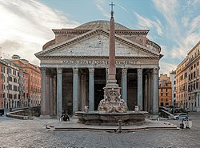
理由：多利亚·潘菲利是一座真正的贵族宫殿，至今仍属私人家族所有。镜廊复刻了凡尔赛宫的华丽，但游客数量仅为乌菲兹的1/20。之后步行5分钟即到万神殿——两千年前的混凝土穹顶至今完好，穹顶中央的圆洞 (Oculus) 透下的光柱是建筑史上最伟大的奇迹之一。
📸 拍摄点：多利亚·潘菲利的镜廊 (Mirror Gallery)；万神殿内部正中央仰拍穹顶光柱。
⏱️ 时间分配：美术馆 1.5小时 → 万神殿 0.5小时
⚠️ 万神殿需官网免费预约（museipantheon.cultura.gov.it），否则无法进入。
备选行动项（替换美术馆部分）：
- 博尔盖塞美术馆 (Galleria Borghese) ⭐⭐⭐⭐⭐：📍 Villa Borghese 公园内。贝尼尼雕塑的巅峰之作《阿波罗与达芙妮》和《普鲁托掳走珀尔塞福涅》都在这里，雕塑的肌肉线条和手指按压皮肤的细节令人窒息。必须提前数周预约，每次限2小时。
- 圣王路易堂 (San Luigi dei Francesi) ⭐⭐⭐⭐：📍 万神殿旁。免费观赏三幅卡拉瓦乔巅峰巨作，投€1点亮灯光即可近距离欣赏明暗对比法的极致。
- 巴贝里尼宫 (Palazzo Barberini) ⭐⭐⭐⭐：📍 Via delle Quattro Fontane 13。拥有拉斐尔的《面包师之女》和卡拉瓦乔的《朱蒂斯砍下霍洛芬斯头颅》，天花板壁画气势恢宏。
17:30 - 18:00 下午茶甜品：万神殿旁的百年冰淇淋
核心行动：在从万神殿前往纳沃纳广场的路上，用一份百年 Gelato 补充能量。
最优项：Giolitti (1900) ⭐⭐⭐⭐⭐

理由：📍 Via degli Uffici del Vicario 40（万神殿步行2分钟）。罗马最古老的冰淇淋店之一，1900年至今，40多种口味，保留了1940年代的装潢。冬天还有招牌热巧克力配鲜奶油。奥黛丽·赫本在《罗马假日》中吃冰淇淋的经典画面就取材自此。
🍦 必点：Pistachio（开心果）+ Crema Giolitti（招牌奶油味）
备选行动项：
- La Casa del Caffè Tazza d'Oro 咖啡冰沙 ⭐⭐⭐⭐：📍 万神殿旁。如果不想吃 Gelato，来一杯 Granita di Caffè con Panna（咖啡冰沙配鲜奶油），提神醒脑。
- Gelateria dei Gracchi ⭐⭐⭐⭐⭐：📍 Via della Tribuna di Campitelli 5。用西西里 Bronte 产区的顶级开心果制作，被评为罗马最佳开心果 Gelato。
18:00 - 19:00 广场漫步：纳沃纳广场与周边
核心行动：在罗马最美的椭圆形广场享受黄金时刻的光影。
最优项：纳沃纳广场 (Piazza Navona) ⭐⭐⭐⭐⭐
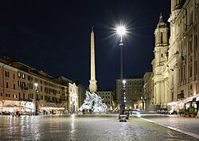
理由：三座喷泉错落有致，中央的四河喷泉是贝尼尼的杰作——代表尼罗河、恒河、多瑙河、拉普拉塔河的四尊巨型雕像围绕方尖碑。广场上街头画家和音乐人营造出浓厚的艺术氛围。
📸 拍摄点：广场南端长椅处，利用喷泉水面反射拍摄圣阿格尼斯教堂。
备选行动项（广场周边步行可达）：
- Campo de' Fiori（鲜花广场） ⭐⭐⭐：📍 步行5分钟。白天是鲜花与食材集市，傍晚变身为年轻人聚集的酒吧街，感受罗马最地道的烟火气。
- Castroni ⭐⭐⭐⭐：📍 Via Ottaviano 55 或 Via dei Giubbonari。意大利高端食品超市，松露酱（€8-15）、意利咖啡豆（€6-10）、手工意面（€3-5）是性价比极高的手信。
- Castel Sant'Angelo（圣天使堡） ⭐⭐⭐⭐：📍 步行10分钟。不必进去，在圣天使桥上拍摄十座天使雕像与圣天使堡的组合，黄昏光线下极美。
19:30 - 21:30 晚餐：越台伯河区的灵魂深处
核心行动：渡过台伯河，进入罗马最有灵魂的美食街区——Trastevere（越台伯河区）。这里是罗马人的"自家厨房"，鹅卵石巷弄中满是藤蔓缠绕的百年小馆。
最优项：Trattoria Da Enzo al 29 ⭐⭐⭐⭐⭐
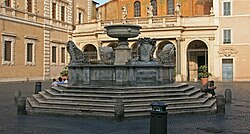
理由：📍 Via dei Vascellari 29。2025年入选携程全球100当地风味餐厅，全罗马最难排队的餐馆之一。食材全部天然有机，Burrata 芝士入口即化，Carciofi alla Giudia（犹太式炸朝鲜蓟）酥脆到极致——这道菜是罗马犹太社区独创的经典。
🍽️ 必点：Carciofi alla Giudia + Tonnarelli Cacio e Pepe + Tiramisù
⚠️ 不接受预订，17:30前去排队可以在19:00第一轮坐下。
备选行动项：
- Tonnarello ⭐⭐⭐⭐⭐：📍 Via della Paglia 77。传统罗马四大面全部精通，户外鹅卵石广场的座位在春夜极其浪漫，分量巨大。
- Nannarella ⭐⭐⭐⭐：📍 Piazza di Sant'Egidio 6/7。氛围感十足的小馆，分量极大的 Amatriciana 面是招牌。
- Dar Poeta ⭐⭐⭐⭐：📍 Vicolo del Bologna 45。隐藏在巷子里的神级披萨店，饼底蓬松有嚼劲，甜品 Calzone（Nutella+乳清芝士馅）是大杀器。
- Freni e Frizioni ⭐⭐⭐⭐：📍 Via del Politeama 4。著名的 Aperitivo（餐前酒）酒吧，€10-12一杯鸡尾酒附赠丰盛自助小食，是体验罗马夜生活的最佳方式。饭前来一杯 Spritz 开胃。
21:30 - 22:00 Gelato 夜宵：完美收官
最优项：Otaleg ⭐⭐⭐⭐⭐

理由：📍 Via di San Cosimato 14（Trastevere 区内）。Gambero Rosso 美食指南推荐，以大胆的创意口味闻名——白巧克力芥末、季节性无花果、松露蜂蜜。从 Da Enzo 步行仅3分钟。
备选：
- La Gelateria Frigidarium ⭐⭐⭐⭐：📍 Via del Governo Vecchio 112（纳沃纳广场方向）。TripAdvisor 4.7分，开心果和黑巧克力口味极佳。
🗓️ 3月15日：罗马 → 佛罗伦萨·文艺复兴启幕
07:00 - 08:00 早餐：出发前的能量储备
核心行动：在前往火车站的路上快速解决早餐，节省时间。
最优项：Antico Forno Roscioli ⭐⭐⭐⭐⭐
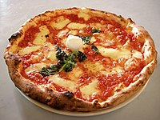
理由：📍 Via dei Chiavari 34。罗马最好的烘焙坊，清晨6:00就开门。现烤的 Pizza Bianca（白披萨，只有橄榄油和海盐）外酥内软，搭配一杯浓缩咖啡就是最完美的罗马式告别早餐。
🥐 必点：Pizza Bianca + Cornetto Integrale（全麦牛角包）+ Espresso
备选行动项：
- Roscioli Caffè ⭐⭐⭐⭐：📍 Piazza Benedetto Cairoli 16。同一家族的咖啡分支，精品意式早餐更加丰盛，开心果酥皮卷必点，但需要多坐15分钟。
- Termini 车站内 Chef Express ⭐⭐⭐：📍 站内。如果时间紧迫，车站内的连锁咖啡也能提供标准的 Cornetto + Cappuccino，味道不差。
08:30 - 10:00 高铁转移：罗马 → 佛罗伦萨
核心行动：从 Roma Termini 乘 Italo 或 Trenitalia 高铁前往 Firenze Santa Maria Novella (SMN)。车程约1.5小时。
最优项：Italo 高铁 Prima 舱（商务舱）
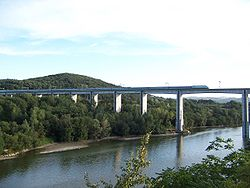
理由：提前预订可享受早鸟价€29-45（经济舱最低€19），Prima 舱提供免费WiFi、饮品和更宽敞的座位。Italo 的红色车身非常醒目，列车新且干净。
⚠️ 购票建议：在 italotreno.it 或 trenitalia.com 提前2-4周购买，价格可能仅为现场购票的1/3。
备选行动项：
- Trenitalia Frecciarossa ⭐⭐⭐⭐：意大利国铁的高速列车，班次更密集，每20-30分钟一班，灵活度高。
- 车上早餐升级：在 Termini 车站的 Eataly Roma 买一份 Focaccia 三明治带上车，享受移动中的意式早午餐。
10:30 - 11:30 酒店 Check-in & 放行李
核心行动：抵达佛罗伦萨 SMN 车站后，先去酒店放下行李（大部分酒店10:30后可寄存），轻装出发。
11:30 - 13:00 圣母百花大教堂：文艺复兴的第一眼震撼
核心行动：从酒店步行前往佛罗伦萨的心脏地带——大教堂广场。这是全城最不可能错过的地标。
最优项：圣母百花大教堂广场 (Piazza del Duomo) ⭐⭐⭐⭐⭐
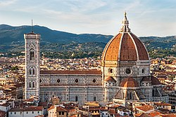
理由：世界上最精美的大理石立面，粉白绿三色的几何图案在阳光下像一幅巨型珠宝画。布鲁内莱斯基设计的穹顶直径45米，至今仍是世界上最大的砖造穹顶，没有使用任何脚手架！
📸 拍摄点：侧面小巷 Via dei Servi 尽头回望，可以拍到巨型穹顶压在巷子顶端的震撼透视感；洗礼堂正门前，拍摄吉贝尔蒂的"天堂之门"青铜浮雕。
⚠️ 登穹顶需提前预约（€30），463级台阶无电梯，恐高者慎入。教堂内部免费但需排队。
备选行动项：
- 乔托钟楼 (Giotto's Campanile) ⭐⭐⭐⭐：📍 大教堂旁。414级台阶登顶，可以近距离平视穹顶的红瓦表面，俯瞰全城红色屋顶。比登穹顶排队短很多。
- 圣若望洗礼堂 (Baptistery of St. John) ⭐⭐⭐⭐：📍 大教堂正前方。吉贝尔蒂花了27年打造的青铜东门被米开朗基罗赞誉为"天堂之门"，内部金色马赛克穹顶也极其震撼。
13:00 - 14:30 午餐：佛罗伦萨灵魂美食
核心行动：在中央市场一带品尝佛罗伦萨最地道的街头美食。
最优项：Da Nerbone ⭐⭐⭐⭐⭐
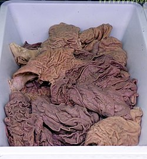
理由：📍 Mercato Centrale（中央市场）一楼内部。始于1872年，牛肚包 (Lampredotto) 的天花板——将慢炖的牛肚切碎，塞进脆皮面包里，再淋上绿酱 (Salsa Verde) 和辣酱。这是佛罗伦萨蓝领阶层的灵魂食物，€5一个就能吃饱。
🥩 必点：Lampredotto 牛肚包 + Bollito 牛肉包 + 一杯红酒
备选行动项：
- All'Antico Vinaio ⭐⭐⭐⭐：📍 Via dei Neri 65。被国外杂志评为"世界最好吃的三明治"之一，排队极长但移动快。Schiacciata 夹各种冷切肉和芝士，€5-8一个，分量巨大。
- Trattoria Mario ⭐⭐⭐⭐：📍 Via Rosina 2。只做午餐的硬核老店（1953年至今），需要拼桌，Ribollita（托斯卡纳面包浓汤）是冬季/初春必吃。
- I' Girone De' Ghiotti ⭐⭐⭐⭐：📍 Via dei Neri（Vinaio 隔壁）。本地人更爱的冷切肉板和三明治，排队比 Vinaio 短很多，品质同样出色。
- Mercato Centrale 二楼 ⭐⭐⭐：现代美食广场，从寿司到牛排到 Gelato 一应俱全，选择困难症的救星。
14:30 - 17:00 皮革巡礼与老城漫步
核心行动：佛罗伦萨是意大利皮革工艺的故乡，下午深入老城寻找真正的匠人手作皮具，同时打卡领主广场。
最优项：Scuola del Cuoio（皮革学校） + Piazza della Signoria（领主广场） ⭐⭐⭐⭐⭐
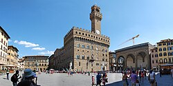
理由：Scuola del Cuoio 位于圣十字教堂的修道院侧翼，二战后由修道士和皮匠家族联合创办，至今仍是活跃的手工皮革工坊。你可以现场观看匠人烫金压花、缝合皮带的全过程，再购买一件真正的佛罗伦萨手工皮具（钱包€40-80、皮带€30-60、皮包€150-400）。之后步行10分钟到领主广场，这里是露天雕塑博物馆——大卫像复制品、珀尔修斯青铜像、海神喷泉一字排开。
📍 路线：圣十字教堂/皮革学校 → Via dei Neri → Piazza della Signoria
🛍️ 购物贴士：辨别真皮看三点——闻（有浓郁天然皮革香）、摸（纹理自然不均匀）、看标签（"Vera Pelle" = 真皮，"Cuoio" = 皮革）。
备选行动项：
- Bottega Fiorentina ⭐⭐⭐⭐：📍 Borgo dei Greci 5。家族作坊，提供手工手套、钱包和定制皮衣，服务亲切，可以刻字。
- San Lorenzo 皮革市场 ⭐⭐⭐：📍 Via dell'Ariento（中央市场旁）。露天摊位众多，价格可砍，但品质参差。建议上午去（人少好砍价），认准"100% Vera Pelle"标签。
- Gucci Garden ⭐⭐⭐⭐：📍 Piazza della Signoria 10。全球唯一的古驰博物馆（€10门票）+ 精品店 + Gucci Osteria 餐厅。博物馆内展示品牌百年历史，精品店有佛罗伦萨独家限量款。
17:00 - 18:30 绝美日落：米开朗基罗广场
核心行动：赶在日落前登上阿诺河南岸的山丘，在全佛罗伦萨最经典的观景点等待金色的黄昏。
最优项：米开朗基罗广场 (Piazzale Michelangelo) ⭐⭐⭐⭐⭐

理由：从市中心步行约25分钟（上坡），或乘12/13路公交到达。这里可以俯瞰佛罗伦萨全景——阿诺河如丝带般蜿蜒穿城，老桥、大教堂穹顶、乔托钟楼、圣十字教堂尽收眼底。日落时分红色屋顶被染成金色，是"人生照片"级别的壮观。
📸 拍摄点：广场栏杆正中位置，将大卫像铜像复制品作为前景框住穹顶。日落时间3月中旬约18:15-18:30。
备选行动项：
- 圣米尼亚托大殿 (San Miniato al Monte) ⭐⭐⭐⭐：📍 广场再往上5分钟。比广场更高更安静，教堂本身也是罗马式建筑的杰作（11世纪），僧侣们每天17:00唱诵格列高利圣咏。
- Ponte Santa Trinita ⭐⭐⭐⭐：📍 市中心河边。拍摄老桥 (Ponte Vecchio) 的最佳侧面角度，黄昏时桥体和水面的金色反射极美。
- 玫瑰园 (Giardino delle Rose) ⭐⭐⭐：📍 上山路上。3月初春玫瑰可能尚未盛开，但园内的日本艺术家设计的铜雕非常有趣，且免费进入。
19:00 - 21:00 晚餐：T骨牛排的暴击
核心行动：佛罗伦萨 T 骨牛排 (Bistecca alla Fiorentina) 是来此必吃的重头戏。正宗做法要求使用 Chianina 品种牛的腰部肉，厚度至少4-5指，明火高温烤制，中间只能是三分熟的血红色。按公斤计价（€45-60/kg），两人合点一块1kg的即可。
最优项：Buca Lapi ⭐⭐⭐⭐⭐
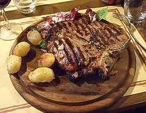
理由：📍 Via del Trebbio 1。佛罗伦萨最古老、评价最高的牛排馆（1880年至今），位于古老的酒窖地下室内，拱形天花板上贴满了来自世界各地的旅行海报。牛排外焦里嫩，配上一瓶 Brunello di Montalcino 红酒，是此行最奢侈的味觉享受。
🥩 必点：Bistecca alla Fiorentina (1kg, 2人分享) + Fagioli all'Olio（托斯卡纳白豆配橄榄油）+ Cantucci con Vin Santo（杏仁脆饼蘸甜酒，甜品）
⚠️ 强烈建议提前1周预约，电话 +39 055 213768
备选行动项：
- Trattoria dall'Oste ⭐⭐⭐⭐：📍 Via Luigi Alamanni 3r（SMN车站旁）。专做各品种干式熟成牛排，可以选择不同天数的熟成和不同部位，肉食爱好者的天堂。
- I'Brindellone ⭐⭐⭐⭐：📍 Piazza Piattellina 10r（Oltrarno区）。极高性价比的本地人最爱，牛排品质不输名店但价格低30%。
- La Giostra ⭐⭐⭐⭐：📍 Borgo Pinti 12r。环境极其浪漫（烛光酒窖），不止牛排，松露意面也是招牌，适合想要特别氛围的晚上。
- Perseus ⭐⭐⭐⭐：📍 Viale Don Minzoni 10。本地人口碑极佳的牛排馆，远离旅游区，性价比高。
21:00 - 21:30 Gelato 夜宵：佛罗伦萨的甜蜜句号
最优项：Vivoli Gelateria (1929) ⭐⭐⭐⭐⭐

理由：📍 Via dell'Isola delle Stinche 7r（圣十字教堂旁）。佛罗伦萨最古老的冰淇淋店，好莱坞明星 Stanley Tucci 力荐的私藏店。只用杯不用蛋筒、不加人工色素——如果 Gelato 颜色太鲜艳那一定是"假货"。开心果色应是暗淡的灰绿色才是真品。
备选：
- Gelateria La Carraia ⭐⭐⭐⭐：📍 Piazza Nazario Sauro 25r（老桥旁）。价格极便宜（€1.5起），品质却出奇地好，Crema 和 Nocciola（榛子）口味绝佳。
🗓️ 3月16日：佛罗伦萨·匠心艺术与奢华扫货
07:30 - 08:30 早餐：市场里的佛罗伦萨清晨
核心行动：在中央市场一带享用一份丰盛的托斯卡纳式早餐。
最优项：Mercato Centrale 二楼 - 早餐区 ⭐⭐⭐⭐
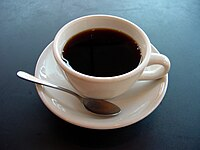
理由：📍 Via dell'Ariento 10-14（二楼）。二楼的现代美食广场从早上开始营业，有专门的 Cornetto 和咖啡摊位，也可以选择新鲜烤 Focaccia 配火腿和乳酪，坐在明亮的钢铁玻璃建筑下吃早餐非常舒服。
备选行动项：
- Caffè Gilli (1733) ⭐⭐⭐⭐⭐：📍 Piazza della Repubblica 39r。佛罗伦萨最古老的咖啡馆，金碧辉煌的装饰堪比宫殿，一杯站立式 Espresso 仅€1.5，坐下来加收座位费但享受完全不同。
- S.Forno ⭐⭐⭐⭐：📍 Via Santa Monaca 3r（Oltrarno区）。本地人最爱的面包坊，Schiacciata all'Olio（佛罗伦萨橄榄油扁面包）外酥内糯。
09:00 - 12:00 艺术殿堂：乌菲兹美术馆
核心行动：这是全球文艺复兴艺术品最密集的博物馆，没有之一。务必提前在 uffizi.it 预约9:00最早场次（€25含预约费），避免排队2-3小时。
最优项：乌菲兹美术馆 (Galleria degli Uffizi) ⭐⭐⭐⭐⭐
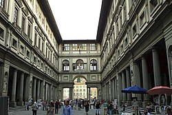
理由：波提切利的《维纳斯的诞生》《春》、达芬奇的《天使报喜》、拉斐尔的《金翅雀圣母》、卡拉瓦乔的《美杜莎》——这些曾经只在教科书上看过的名画，真迹就在你面前。
📸 拍摄点：乌菲兹长廊的窗户可以拍到老桥的经典角度。
⏱️ 建议参观时间：2.5-3小时。必看房间：波提切利厅（10-14号）、达芬奇厅（15号）、拉斐尔厅（66号）、卡拉瓦乔厅（90号）。
备选行动项（若乌菲兹票已售罄）：
- 学院美术馆 (Galleria dell'Accademia) ⭐⭐⭐⭐⭐：📍 Via Ricasoli 58-60。只为看一眼米开朗基罗的《大卫》真迹——5.17米高的大理石巨人，肌肉纹理和手部血管的雕刻细节令人窒息。参观1-1.5小时即可。
- 皮蒂宫 (Palazzo Pitti) ⭐⭐⭐⭐：📍 Piazza de' Pitti。美第奇家族的居所，满墙的拉斐尔和提香，后面连接波波里花园。
- 美第奇礼拜堂 (Medici Chapels) ⭐⭐⭐⭐：📍 Piazza di Madonna degli Aldobrandini 6。米开朗基罗设计的"新圣器室"，《昼》《夜》《晨》《暮》四座雕像是其晚年的沉思之作。
12:00 - 13:30 午餐：托斯卡纳的味觉记忆
核心行动：从乌菲兹出来后，步行至阿诺河南岸的 Oltrarno 区——这是佛罗伦萨最有"本地感"的街区。
最优项：Trattoria Sostanza (il Troia) ⭐⭐⭐⭐⭐

理由：📍 Via del Porcellana 25r。1869年至今的传奇小馆，座位不到30个，只有两道菜是必点的：Burro Chicken（黄油鸡胸肉——用整块黄油煎到表面金黄，切开后汁水横流）和 Artichoke Omelette（朝鲜蓟煎蛋饼）。这里没有菜单，服务员直接口述当日菜品。
🍽️ 必点：Burro Chicken + Artichoke Omelette + Cantucci con Vin Santo
⚠️ 只接受电话预约，+39 055 212691，且只收现金！
备选行动项：
- Osteria Pastella ⭐⭐⭐⭐：📍 Via degli Alfani 74r。现场在巨型帕玛森奶酪轮里拌面的表演极具仪式感——服务员将热意面直接倒入掏空的奶酪轮中翻拌，奶酪融化包裹每一根面条。
- Buca Mario ⭐⭐⭐⭐：📍 Piazza degli Ottaviani 16r。地窖式传统氛围，从2007年至今年年获选米其林餐盘推荐，牛排和野猪肉酱面都是经典。
- Fishing Lab Alle Murate ⭐⭐⭐⭐：📍 Via del Proconsolo 16r。米其林推荐的海鲜餐厅，位于14世纪壁画遗址内用餐，环境极为独特。
13:30 - 14:30 百年药妆店：全世界最古老的药房
核心行动：午餐后步行前往一处"像宫殿一样的购物空间"——这可能是你此行最惊艳的非典型打卡点。
最优项：Santa Maria Novella 药妆店 ⭐⭐⭐⭐⭐
理由：📍 Via della Scala 16。创立于1221年的修道院药房，是世界上最古老的药妆店，至今仍在佛罗伦萨工厂手工制作所有产品。走进去的那一刻——壁画穹顶、彩色玻璃窗、大理石柜台——你会以为自己走进了一座教堂。
Acqua di Rose（玫瑰花水） €20-25：用途 > "百搭保湿水"，800年配方，用作化妆水或喷雾，气味清新不刺鼻。
Pot-Pourri 陶罐香囊 €35-50：用途 > "高级伴手礼"，手绘陶罐装的天然花瓣香囊，打开盖子满室芬芳，送人极有面子。
Tabacco Toscano 古龙水 €125：用途 > "男士签名香"，烟草和木质调的温暖气息，非常有辨识度。
Cinquanta 古龙水 €150：用途 > "男女通用香"，2015年为纪念佛罗伦萨与京都结为友好城市而创，融合地中海佛手柑和东方绿茶。
14:30 - 18:00 奢华扫货：Via de' Tornabuoni 一条街搞定
核心行动：这是本次旅行的奢侈品集中扫货时段！佛罗伦萨的 Via de' Tornabuoni 是意大利最奢华的购物街之一，从 Piazza Antinori 一直延伸到 Ponte Santa Trinita，短短500米集中了所有顶级品牌。选择在归程前一天下午购买，买完直接回酒店锁进保险箱，最大程度降低被盗风险。
最优项：Via de' Tornabuoni 品牌地图 ⭐⭐⭐⭐⭐
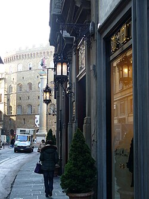
🛍️ 扫货路线（从北到南，步行10分钟走完全程）：
| 品牌 | 地址 | 特色 |
|---|---|---|
| Gucci | Via de' Tornabuoni 73-81r | 佛罗伦萨是 Gucci 发源地，部分款式为当地独家 |
| Ferragamo | Piazza Santa Trinita 5 | 总部旗舰店+鞋博物馆，顶层可俯瞰阿诺河 |
| Prada | Via de' Tornabuoni 67r | 经典款皮具比国内便宜20-35% |
| Fendi | Via de' Tornabuoni 40r | 意大利本土品牌，皮草和包包系列齐全 |
| Valentino | Via de' Tornabuoni 52r | Rockstuds 铆钉鞋/包系列是爆款 |
| Cartier | Via de' Tornabuoni 40r | 珠宝和腕表 |
| Hermès | Piazza Antinori 6r | 佛罗伦萨旗舰店 |
| Emilio Pucci | Via de' Tornabuoni 20-22r | 佛罗伦萨本土品牌，招牌几何印花丝巾 |
| Roberto Cavalli | Via de' Tornabuoni 83r | 总部旗舰店 |
💰 退税操作流程：
- 购物时出示护照，要求开具 Tax Free Form（Global Blue 或 Planet）
- 仔细核对表单上的护照号码、姓名拼写、国码
- 保留所有收据原件（拍照备份）
- 离境时在机场完成 OTELLO 电子验证或海关盖章
- 投入退税公司专用邮箱或交给人工柜台
⚠️ 防盗策略：购物后立即回酒店，将所有购物袋锁入保险箱。不要提着品牌购物袋在街上逛！如需继续外出，换上普通帆布袋装好。
备选行动项（补充购物选择）：
- Luisa Via Roma ⭐⭐⭐⭐⭐：📍 Via Roma 19-21r。全球顶级买手店，集合了 Balenciaga、Bottega Veneta、Loewe 等数百个品牌，如果不想一家家逛，这里一站搞定。
- Richard Ginori ⭐⭐⭐⭐：📍 Via dei Rondinelli 17r。意大利国宝级瓷器品牌（1735年），手绘餐具精美绝伦，一套咖啡杯€60-120，送人极其体面。
- Rinascente 百货 ⭐⭐⭐⭐：📍 Piazza della Repubblica 1。意大利高端百货，顶楼露台餐厅正对大教堂穹顶，一站式购买各品牌且可统一办理退税。
- Loretta Caponi ⭐⭐⭐：📍 Piazza Antinori 4r。佛罗伦萨顶级手工刺绣品牌，真丝睡衣和桌布是富裕阶层的心头好（一件睡衣€300-800）。
18:00 - 19:00 回酒店放好战利品
核心行动：将所有奢侈品购物袋送回酒店，锁入保险箱。换上舒适衣服，轻装出发享受最后一晚的佛罗伦萨。
19:30 - 21:30 最后的晚餐：完美谢幕
核心行动：用一顿充满仪式感的晚餐为意大利之旅画上句号。
最优项：La Giostra ⭐⭐⭐⭐⭐
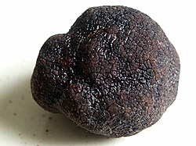
理由：📍 Borgo Pinti 12r。由哈布斯堡王朝后裔开设的浪漫酒窖餐厅，烛光摇曳的拱形砖墙下，松露意面香气扑鼻。老板会亲自到每桌问候，送上自酿的 Vin Santo 甜酒。这是那种"你会在多年后仍然想起"的餐厅。
🍽️ 必点：Tartufo Pasta（松露意面）+ Tagliata di Manzo（切片牛排）+ Tiramisù + Vin Santo
⚠️ 提前预约：+39 055 241341
备选行动项：
- Buca Lapi ⭐⭐⭐⭐⭐：如果昨晚没去成，今晚是最后机会吃佛罗伦萨最好的 T 骨牛排。
- Ristorante Santa Elisabetta ⭐⭐⭐⭐⭐：📍 Hotel Brunelleschi 内。佛罗伦萨高端餐厅排名第一（4.8分），位于中世纪拜占庭塔楼内部用餐，菜品精致如艺术品（人均€80-120）。
- I'Brindellone ⭐⭐⭐⭐：📍 Piazza Piattellina 10r。如果想要一个轻松的当地人氛围，这里的牛排性价比极高，户外广场座位在春夜微风中非常惬意。
21:30 - 22:00 告别甜品：最后一口 Gelato
最优项：Perché no!... (1939) ⭐⭐⭐⭐⭐
理由：📍 Via dei Tavolini 19r（领主广场旁）。1939年至今的老字号，生姜口味极为特别——微辣的姜味在奶油的甜香中绽放，是佛罗伦萨最有创意的 Gelato 之一。
备选：
- Vivoli ⭐⭐⭐⭐⭐：如果昨晚没去，最后一晚补上。
🗓️ 3月17日：归程·机场免税最后一搏
04:30 起床 & 整理行李
核心行动：检查所有退税单据是否齐全（购物小票+Tax Free Form），将需要退税的商品放在随身可取的位置（海关可能要求查验）。
⚠️ 退税检查清单：
- 所有 Tax Free Form 已填写完整
- 护照号码和姓名与表单一致
- 购物小票原件与表单对应
- 商品保持全新（有包装盒的保留完整）
- 拍照备份所有单据
05:00 退房出发
核心行动：请前台代订出租车（佛罗伦萨市区到 FLR 机场固定费率约€25-30，车程20-25分钟）。小费不是强制的，但给€2-3零钱是礼貌。
05:30 - 06:30 FLR 机场：退税 & 免税店扫货
核心行动：抵达 Amerigo Vespucci 机场 (FLR) 后，依次完成退税和免税购物。FLR 是小型机场，流程相对快速。
退税流程：
- 先到海关柜台（Check-in 区域旁）办理 OTELLO 电子验证或人工盖章
- 如选择信用卡退税（手续费低），将盖章后的表单投入 Global Blue / Planet 专用邮箱
- 如选择现金退税，到退税公司柜台排队领取（手续费较高但即时到账）
最优项：Firenze Duty Free 免税店 ⭐⭐⭐⭐
理由：📍 安检后出发区域。营业时间06:00-20:30。虽然 FLR 免税区比罗马 FCO 小得多，但仍有值得抓紧最后机会购买的好物。
Versace 香水系列 €40-80：用途 > "免税价比市区便宜10-15%"，Crystal Noir 和 Bright Crystal 是经典款。
意大利本土巧克力（Venchi / Perugina Baci） €10-20：用途 > "办公室伴手礼"，Baci 榛子巧克力包装精美，每颗内附一张爱情箴言。
Limoncello（柠檬利口酒） €12-18：用途 > "餐后消化酒"，冷冻后小口啜饮，柠檬香气极为清新。
意大利特级初榨橄榄油 (Extra Virgin) €8-15：用途 > "厨房必备"，托斯卡纳产区的橄榄油口感果香浓郁，比国内品质高数倍。
Grappa（渣酿白兰地） €15-30：用途 > "收藏级烈酒"，用葡萄皮渣蒸馏而成的意大利国酒，口感浓烈辛辣。
备选行动项：
- 最后一杯意式咖啡：在机场候机区的咖啡吧站着喝最后一杯 Espresso（约€1.5），为这趟旅程画上最具仪式感的句号。
- 机场书店纪念品：意大利制造的皮质笔记本、手绘明信片和艺术画册是轻便又有质感的伴手礼。
07:00 登机
带着满满的回忆、行李箱里的手工皮具、退税单据和最后一丝 Gelato 的甜蜜余韵，飞回深圳。✈️
Buon viaggio! 祝旅途愉快！
Buon viaggio! 祝旅途愉快！
📋 附录：防盗装备与实用信息速查
防盗必备装备
| 装备 | 说明 |
|---|---|
| 防割斜挎包 | 钢丝内衬防割、隐藏拉链、RFID屏蔽（推荐 Pacsafe/Travelon） |
| 隐形腰包 | 贴身藏在衣服内，存放护照和大额现金 |
| 小额零钱包 | 外口袋放€5-10小额纸币，付卫生间和小费用 |
| 手机链/防丢绳 | 拍照时手机不离手 |
高风险区域警示
| 地点 | 风险等级 | 注意事项 |
|---|---|---|
| 特莱维喷泉 | ⚠️⚠️⚠️ | 拍照时包挎身前，手机拍完即收 |
| Termini 火车站 | ⚠️⚠️⚠️ | 买票时注意周围，不要在站内数钱 |
| 40/64路公交车 | ⚠️⚠️ | 这两条线路经过梵蒂冈，扒手密集 |
| 地铁A/B线 | ⚠️⚠️ | 高峰期车厢拥挤时特别注意 |
| 佛罗伦萨老桥 | ⚠️ | 人多拥挤时注意随身物品 |
紧急联系方式
- 意大利报警电话：112（通用紧急号码）
- 中国驻罗马大使馆：+39 06 96524200
- 中国驻佛罗伦萨总领馆：+39 055 5520735